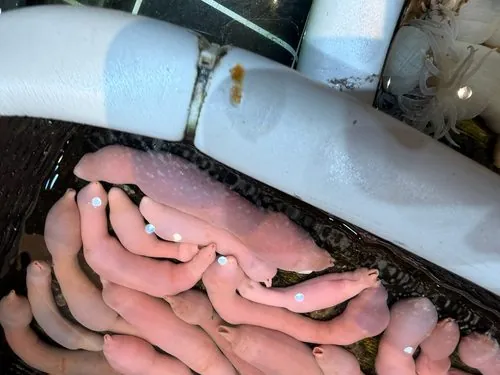

其他无脊椎动物 · 动物界
单环刺螠 Urechis unicinctus

俗称海肠的螠虫动物，身体柔软呈香肠状，生活在泥沙洞穴中，是中国北方沿海和韩国当地著名的海鲜。
- 分类
- 门螠虫动物门纲螠纲目螠目科刺螠科属刺螠属
- 栖息环境
- 泥沙底质的潮间带和浅海，挖掘 U 形洞穴
- 地理分布
- 中国北方沿海、朝鲜半岛和日本部分海域
- 保护级别
- 暂无评估；野生资源受采捕影响
物种志
单环刺螠体长约 10–25 cm，身体柔软、呈圆筒状或香肠状，前端有短吻，体表光滑无节，颜色为浅红、粉红或淡黄色；身体末端有一圈刚毛，因此称单环刺螠。它属于螠虫动物门，是一类不常见的海洋底栖动物。
它生活在泥沙底质的潮间带和浅海，挖掘 U 形或 Y 形洞穴，靠体表黏液和刚毛在洞中移动，滤食海水中的有机颗粒和浮游生物。单环刺螠是中国北方和韩国沿海的特色海鲜，俗称海肠，可炒食或做成海肠粉调味，价格较高。由于采捕强度大和滩涂环境变化，部分产区的野生资源有所下降，目前已有增殖和养殖尝试，采捕时需要保护洞穴和底质。海肠的味道鲜美，价格较高。
形态与习性
- 食性滤食海水中的有机颗粒和浮游生物
- 体长约 10–25 cm
- 形态身体柔软呈香肠状，末端有一圈刚毛
- 栖息泥沙底质潮间带和浅海，挖洞穴居
- 经济中国北方和韩国的特色海鲜，俗称海肠
- 资源采捕强度大，部分地区资源下降
趣味知识
- 海肠是单环刺螠的俗称，身体柔软像一根香肠。
- 它在泥沙里挖洞生活，靠体表黏液和刚毛移动。
- 海肠在韩国和中国北方是价格较高的特色海鲜。